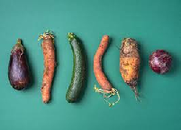
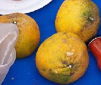
The pursuit of good-looking fruit has become common in the consumer market, leading to a lack of awareness about imperfect fruit. This trend contributes to significant fruit waste and economic losses for farmers.
The Imperfect Fruit Recycling System seeks to address this by managing the entire process of imperfect fruit—from recycling and sorting to processing and sales. Its goals are to reduce fruit waste, enhance farmers' economic benefits, and help consumers appreciate and purchase imperfect fruit, broadening societal perceptions.
Whenever I go to the supermarket, I notice how clean and neat the fruits are on the counter. The strange-looking fruits we see on our mobile phones, on the other hand, are just a rare occurrence when we are out and about. We live in a world that is full of fruits.
Are they really all so perfect all the time?
1. China's fruit waste is serious
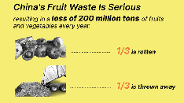
2. Two Main Causes for Fruit Being Thrown Away
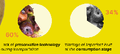
3. What Fruit is Considered Imperfect?
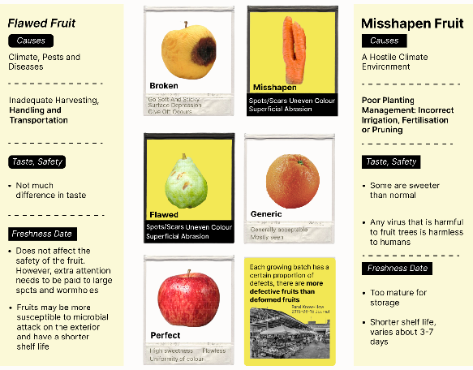
Conclusion:
With fruit waste being so severe, And yet, in everyday life, many of these ‘Imperfect’ fruits never even make it into the public eye. So where do they go? How can we better utilise the value of imperfect fruit to reduce fruit waste?
#
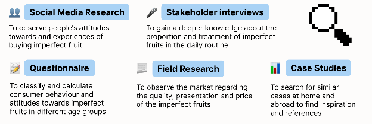
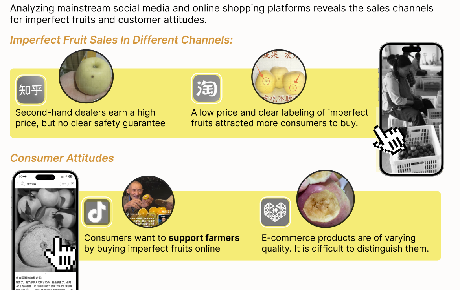
Imperfect fruit has become quite widespread on social media, but the quality varies considerably.
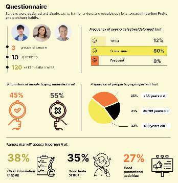
Imperfect fruit is only occasionally found in the market, and most of those who buy it are middle-aged or elderly people.
In order to further understand consumers' perceptions of imperfect fruits when purchasing fruits, we interviewed a number of relevant consumers.
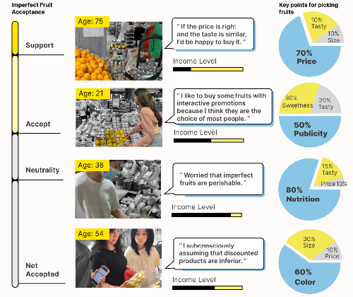
Conclusion:
Field research was conducted on farms, Wholesale supermarket and supermarkets, and interviews were conducted with relevant staff to understand how they sell imperfect fruits and what they do with unsold fruits.
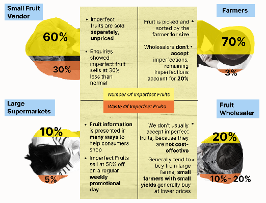
Conclusions:
Using interviews and secondary findings, I analysed the distribution chain of fruits and attempted to solve problems.
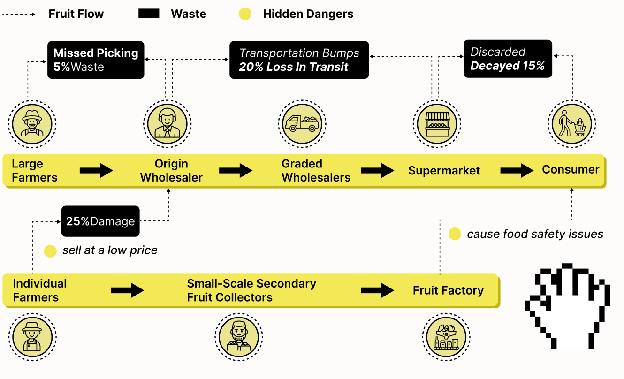
Insights:
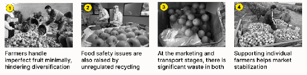
This distribution chain shows, whilst the transport of fruit and unsold stock in supermarkets also account for a significant pro that small-scale （individual）farmers account for the greatest amount of waste in the fruit collection processportion.
*THEREFORE： I intend to explore and develop solutions to the waste of ‘Imperfect’ fruit across three stages: from the source (starting with small-scale farmers) through to the management of collection by middlemen, and finally to consumer awareness at the end of the process.*The system focuses on farmers, fruit sellers, and consumers, and all related stakeholders will work together to make the system sustainable.
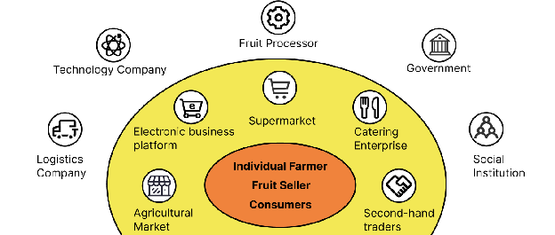
User Stories
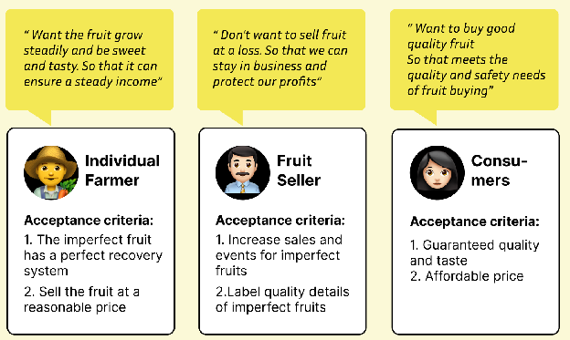
All three stakeholders have their own needs: farmers want to sell their imperfect fruit, wholesalers want to increase their take-up, and consumers want to buy fruit that is both affordable and tasty.
Problem statement
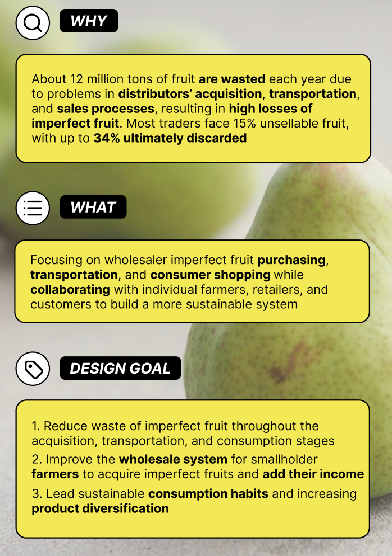
Insight
By observing the phenomena in the aspects of acquisition, transportation, and online and offline sales, we aim to identify opportunities.
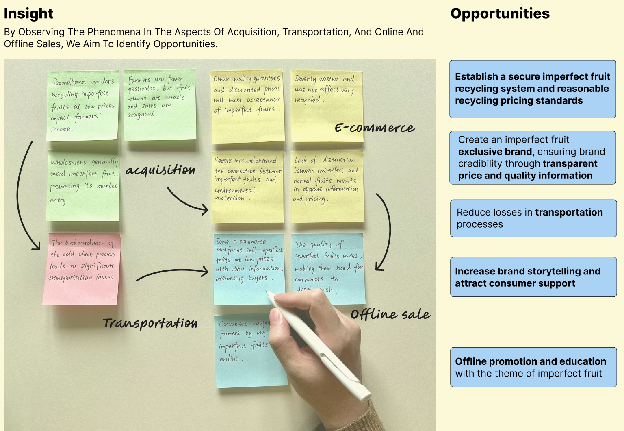
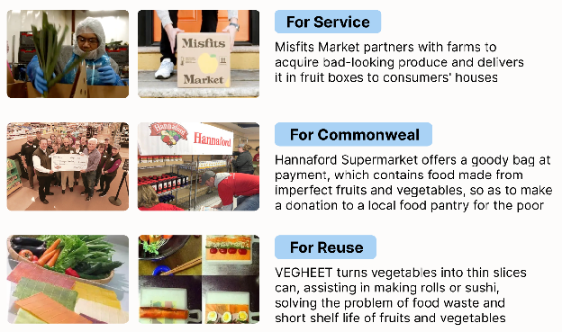
I will analyse these case studies to develop a conceptual framework for the system I am designing.
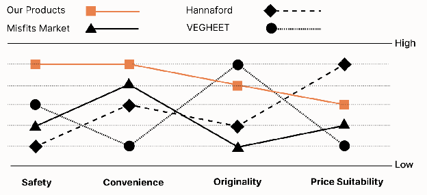
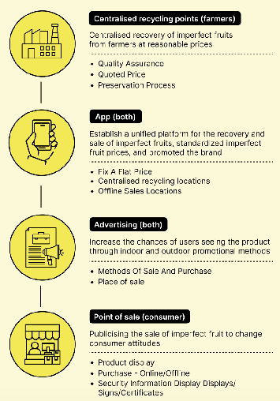
The preliminary design comprises four components: the collection component primarily addresses the difficulties faced by farmers and collectors in collecting produce, whilst the app, noticeboards and sales outlets are designed to address consumers’ lack of awareness regarding ‘Imperfect’ fruit.
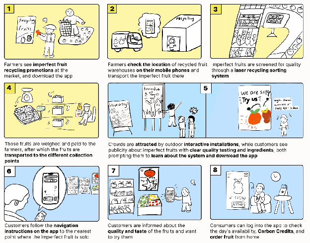
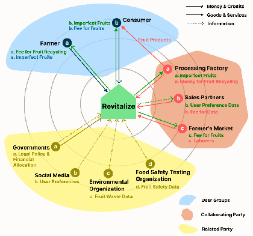
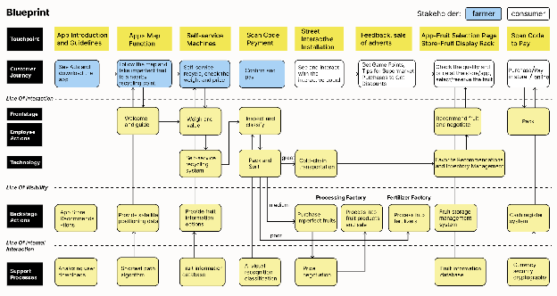
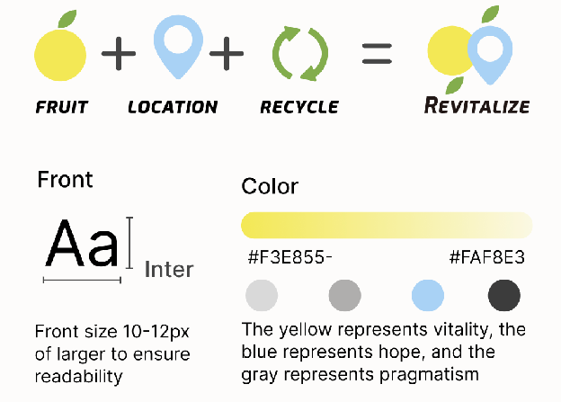
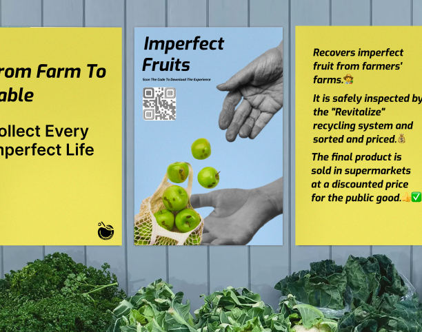
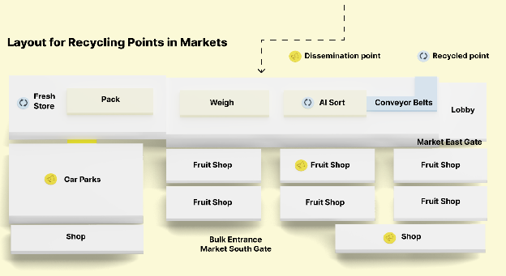
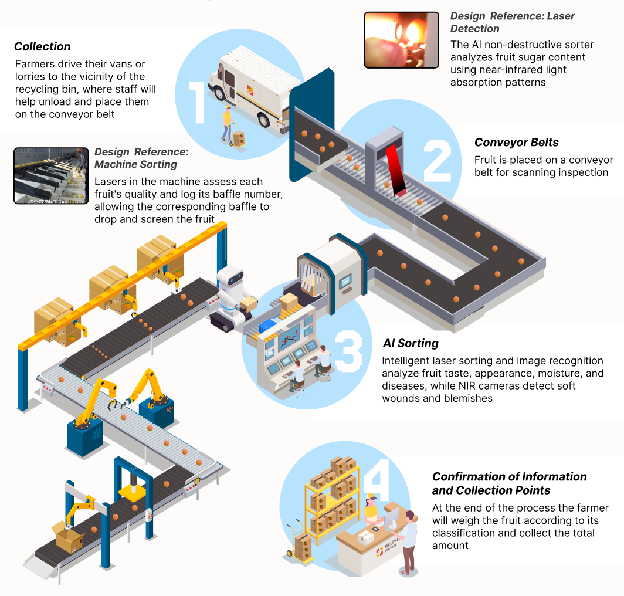
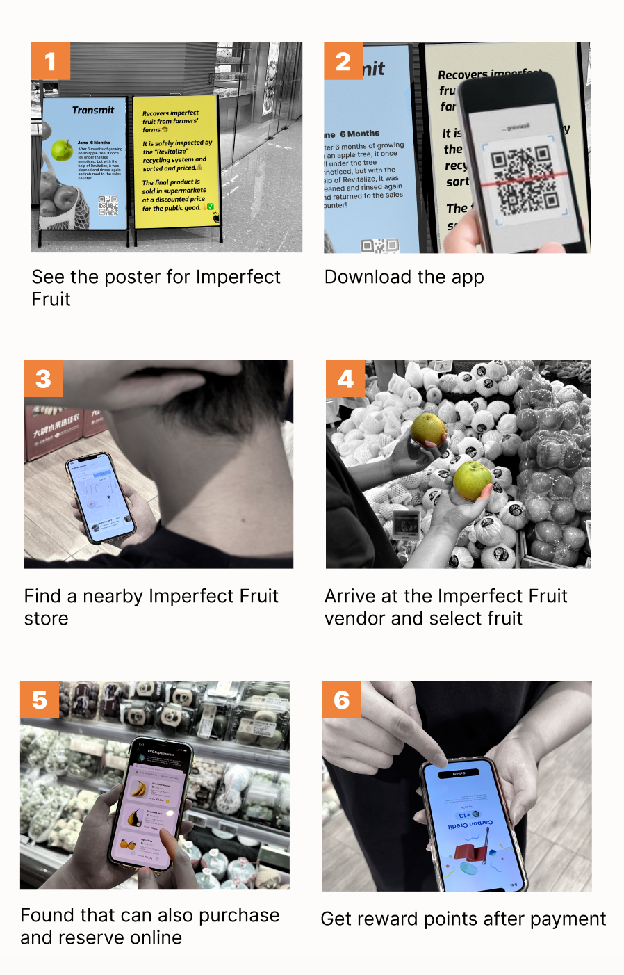
The interactive billboard engages people through fun games with a reward mechanism, promoting our recycling system.
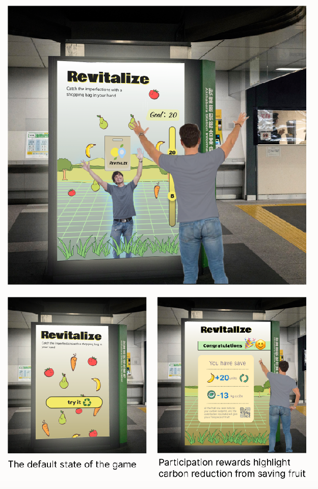
The fruit counter uses an interactive board to attract customers with discounts and promotions, showcasing quality, taste, and safety to enhance user trust.
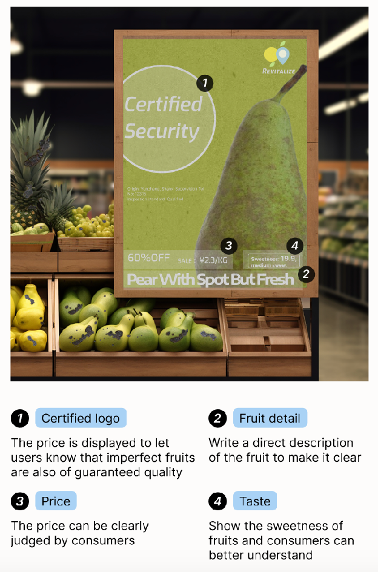
Touchpoint 3: AppThis makes it easy for farmers to deliver their fruit to our collection centres and for consumers to use our app to purchase imperfect fruit, creating a perfect cycle within our system.
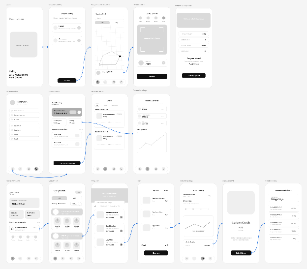
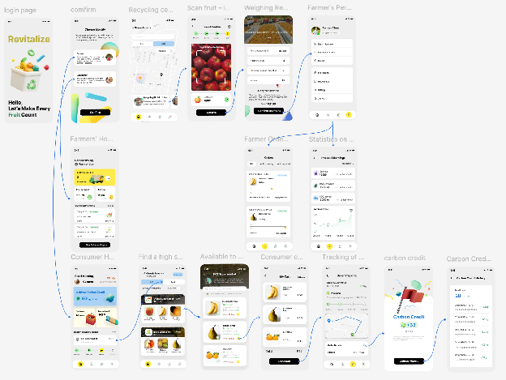
This business canvas outlines the future commercial vision for the system, clearly setting out the feasibility of all business modules, and is highly practical.
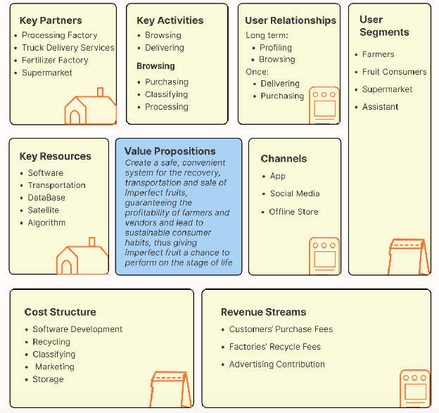
To simulate the service experience for the testers and to find and explore alternatives, the entire service flow of the Imperfect Fruit system is shown in cards, combined with user guides.
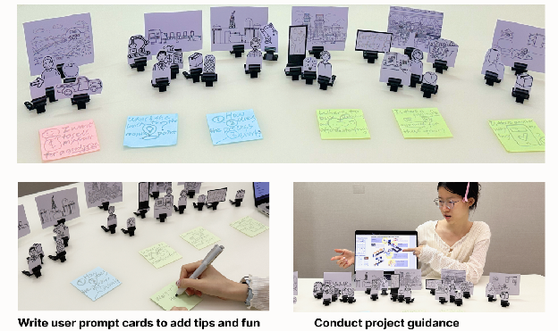
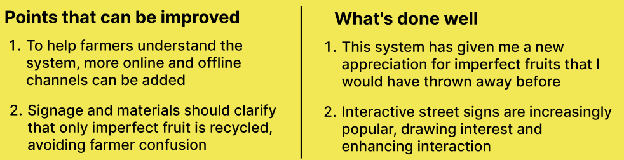